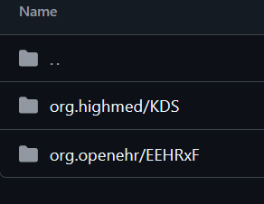
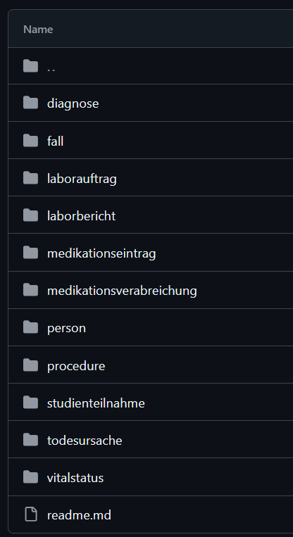

The extension mappings Archetypes and resources are the core components of he models, but not the only ones. Both openEHR and FHIR have a second layer of models that interact with these. In FHIR these are called Profiles. A Profile may introduce changes in the cardinality of fields, but also add extensions. These extensions are fields that are typically introduced by the user, since the resource does not cover every use case. Also profiles, depending on the project, can make use of fields in a different way. OpenEHR on the other hand, has templates, these reference archetypes as building blocks and constrain them or add coding values etc. They do not extend the existing models, only constraint archetypes or the reference model. Both Templates and Profiles are designed to be project specific. Therefore, for each project that is mapped, we need to introduce a set of changes and extensions to our model-mappings. This is done in the extension mappings. An extension mapping always relates 1-to-1 to a model-mapping. File structure In general the folder structure of each FHIRconnect project is up to the provider. The official library follows the pattern described here. Extension mappings are contained in the project folder. Folders are split depending on the project files they contain.  Inside the project folder, sub-folders represent each module that is mapped. These folders contain the extensions and context-files for one template (sometimes also more than for one template) . The context file is explained later in the chapter Context Mappings.  Extension header The type of header needs to be set to extension. Since it extends a existing mapping it does not need to reference the archetype or other metadata again. The key extends is used to reference the model-mapping. Hereby, the name of the model mapping is used. engine: FHIRConnect/v0.0.1 type: extension metadata: name: KDS_anatomical_location version: 1.0.0 # version of this particular mapping spec: # schema specific to the FHIRConnect v0.0.1 engine system: FHIR version: R4 extends: CLUSTER.anatomical_location.v1 # the name of the model mapping that is to be extended Model Mappings Extension methods